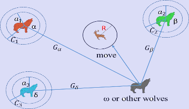
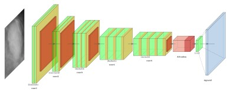

Projects
-

Gray Wolf Optimization-based Cancer Diagnosis
Disease identification from gene expression microarray data is an extremely important research problem. Analysis of microarray data helps to accurately diagnose the disease types, finds therapeutic plans for that disease, helps to gain insight into molecular mechanisms of that genetic disease and many more. In this work, a filter-wrapper-based disease identification technique inspired by gray wolf optimization (GWO) algorithm is proposed.
Read More -

DNN For Cancer Diagnosis
Cancer diagnosis from mammogram images is a critical application of medical imaging and radiology in the field of breast cancer detection. Mammography is a standard and widely used screening tool for breast cancer. In this work, Deep Neural Network (DNN) combined with meta-heuristic algorithm has been applied for cancer diagnosis from mammogram images.
Read More